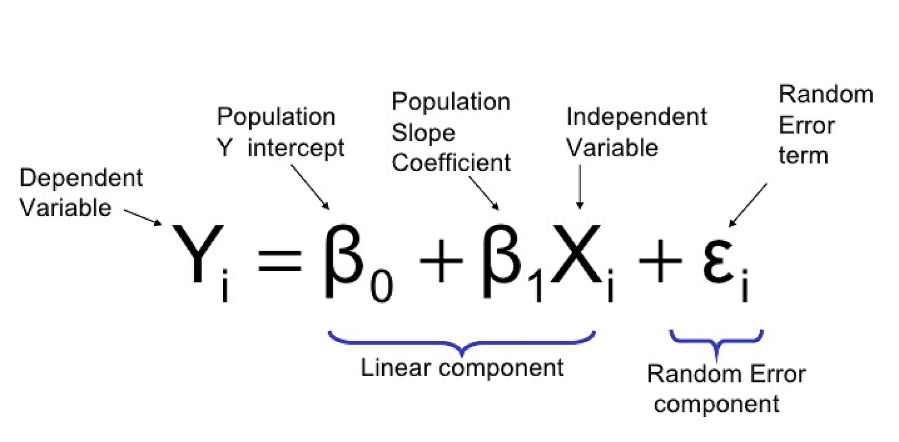
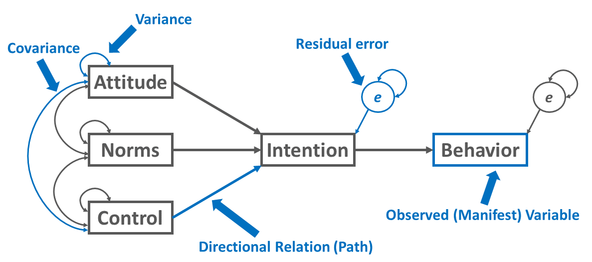
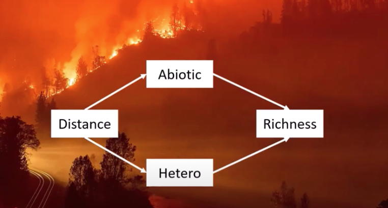
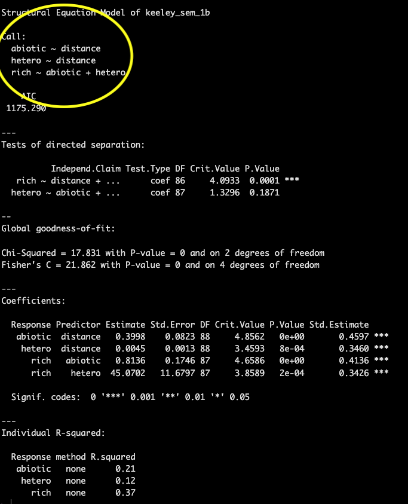
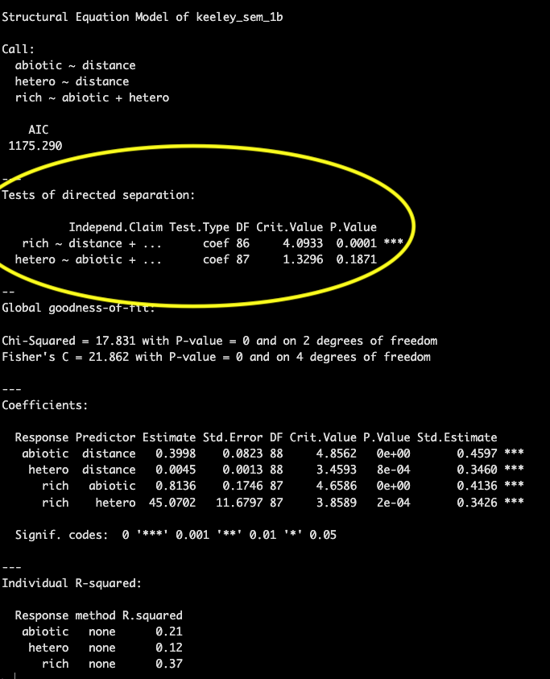
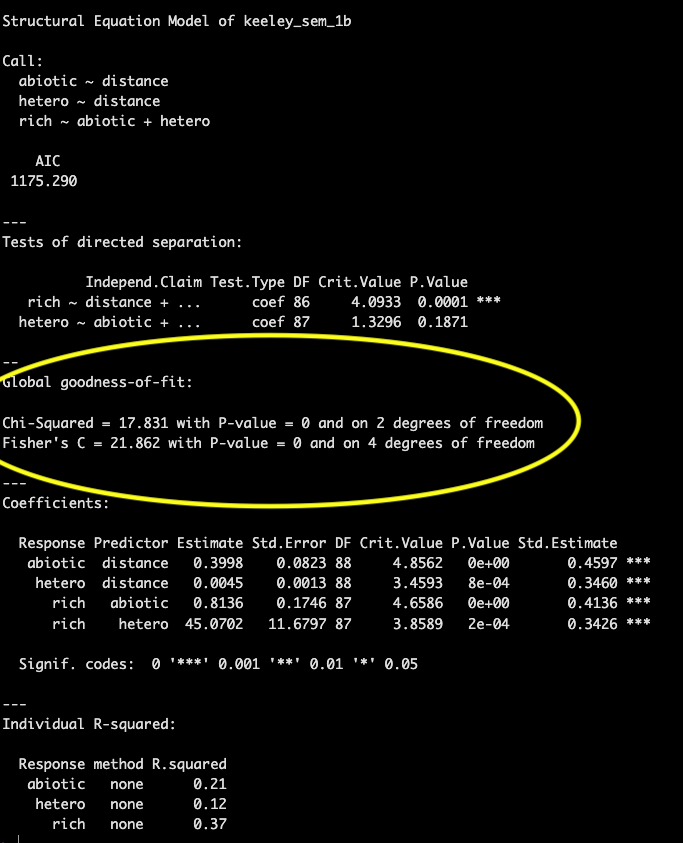

Statistical Modeling
Module 3: Structural equation models (SEMs)
2024
Materials
Scripts
Click here to download the script! Save the script to the ‘scripts’’ folder in your project directory you set up in the previous module.
Load your script in RStudio. To do this, open RStudio and click the files window and select the scripts folder and then this script.
Cheat sheets
There are no cheat sheets specific to this module but don’t forget the ones you’ve already printed for previous modules!
R documentation
Click here to download the R documentation for the piecewsieSEM package
Video resources
Below our several YouTube videos that provide a good introduction to SEMs
Intro to Structural Equation Modeling - Johnny Lin
This website pairs with the above video.
Structural Equation Models in Ecology - Jon Lefcheck
A lot of the material and code presented in this module is taken from Lefcheck’s seminar on SEM.
What is SEM?
Structural equation modeling is a statistical approach that allows us to test multiple (network) hypotheses regarding the relationships between multiple variables in our data simultaneously. The name itself tells us a lot about how these models work
Structural
Implies that there is an underlying structure (cause and effect) and we have a hypothesis regarding what that underlying structure is.
Equation
These hypotheses can then be translated to a series of mathematical equations ( individual general linear regressions) that are grouped within a single causal network. These equations are particularly useful to assess direct AND indirect effects within a system.
Modeling
We can then fit these equations to data to support or refute our hypothesized structure.
With SEMs our analysis is heavily reliant on the hypothesized underlying structure (our proposed causes and effects) so it is crucial when applying SEM that you have a strong understanding of your system.
And a model is not set in stone, adjustments can be made to the hypothesized structure as new information becomes available and from the results of the analysis in an iterative fashion.
Path diagrams
Path diagrams are a graphical tool used with SEMs to depict the relationships between variables (structured equations). There is a somewhat standardized way of presenting a path diagram shown in the example below as well as common terminology to be familiar with.

In the diagram above there are exogenous and endogenous variables represented by the rectangles.
Exogenous variables are independent variables that explain one or more endogenous variables, meaning they only have arrows pointing away from them and not towards them (solely explanatory variables) and when translated to a formula they will never be on the left side of the ‘~’.
Endogenous variables are dependent (response) variables that are explained by other variables in the model. Thus arrows point towards them (and can also point away) representing causal paths.
Both exogenous and endogenous variables can be either observed or latent variables. Observed variables are most common and are variables for which we can measure and have data for. Latent variables are unmeasured variables which can also be modeled with SEMs but we will not be covering that in this module. Observed and latent variables are often represented with different shapes in a path diagram.
- Arrows represent relationships among variables, the variable the arrow is pointing to is the dependent (response) variable and the variable the arrow is pointing away from is the independent (explanatory) variable.
We can break down the above diagram into individual structured equations in a format you are likely more familiar with using the equation for a linear regression.

The simplified individual equations for the diagram above would be as follows
- y1 ~ x1
- y2 ~ x1 + y1
In these simplified formulas we have not written out the slope terms, but they are estimated from the model, or error terms. But as with all statistical analysis there is some amount of error associated with estimating one variable from another and this can be represented graphically in a path diagram as shown below.

There may also be variables in your path diagram that co-vary, but you don’t expect to have a causal relationship. These are depicted often depicted in diagrams with curved arrows and can be modeled using the syntax below
y1 covariance with y2
- y1 ~~ y2
SEM in R
PiecewiseSEM package
There are multiple packages available in R for SEM analysis, the one we will focus on is the PiecewiseSEM package developed my Jon Lefcheck. This adaptation of SEM is informed by graph theory and varies from older approaches to SEM in that instead of estimating a single global matrix which includes all the variables at once it estimates each equation individually which increases the flexibility of the analysis. Each equation can have different assumptions, different error distributions, fitting functions, etc. This makes PiecewiseSEM useful for messy data we are often working with in ecology.
Another common SEM package is the lavaan package, which has less flexibility but is maybe more widely known as it was developed earlier. Click here a short SEM example with the lavaan package.
First we need to install and load the PiecewiseSEM package.
# Libraries ----------------------
# install package
install.packages("piecewiseSEM")
# load library
library(piecewiseSEM)Data
For this example we will be working with the keeley data set which is loaded with the piecewiseSEM package. This is from Grace and Keeley 2006 paper published in Ecological Applications
Let’s load the keeley data and take a look at it
# Data ----------------------
# Load Keeley data set
data(keeley)
# Examine Keeley data
head(keeley)## distance elev abiotic age hetero firesev cover rich
## 1 53.40900 1225 60.67103 40 0.757065 3.50 1.0387974 51
## 2 37.03745 60 40.94291 25 0.491340 4.05 0.4775924 31
## 3 53.69565 200 50.98805 15 0.844485 2.60 0.9489357 71
## 4 53.69565 200 61.15633 15 0.690847 2.90 1.1949002 64
## 5 51.95985 970 46.66807 23 0.545628 4.30 1.2981890 68
## 6 51.95985 970 39.82357 24 0.652895 4.00 1.1734866 34This data set contains 90 observations of 8 plant community metrics and is used frequently as an example with SEM data. For more information on the keeley data you can reference the help file
# learn more about keeley data
?piecewiseSEM::keeleyFit SEM to data
The following code and images are taken from Lefcheck’s seminar in the statistical methods series, which is linked above
There are multiple ways to fit a structural equation model to your data in R but both require that you break down the components of your network into individual component regressions.
Let’s say this is your hypothesized network structure

For each of the endogenous variables (dependent variables) you must write a regression equation.
# SEM model ----------------------
# option 1 to fit SEM model to data
# Break down component regressions
abiotic_model <- lm(abiotic ~ distance, data = keeley)
hetero_model <- lm(hetero ~ distance, data = keeley)
richness_model <- lm(rich ~ abiotic + hetero, data = keeley)
# Use the `psem` function to create the SEM
keeley_sem_1a <- psem(abiotic_model, hetero_model, richness_model)
# option 2
# nest the component regressions inside the 'psem' function
keeley_sem_1b <- psem(
lm(abiotic ~ distance, data = keeley),
lm(hetero ~ distance, data = keeley),
lm(rich ~ abiotic + hetero, data = keeley)
)Interpreting model output
As with other regression models, we can use the
summary() function to examine our SEM
summary(keeley_sem_1b)##
|
| | 0%
|
|=================================== | 50%
|
|======================================================================| 100%##
## Structural Equation Model of keeley_sem_1b
##
## Call:
## abiotic ~ distance
## hetero ~ distance
## rich ~ abiotic + hetero
##
## AIC
## 1175.290
##
## ---
## Tests of directed separation:
##
## Independ.Claim Test.Type DF Crit.Value P.Value
## rich ~ distance + ... coef 86 4.0933 0.0001 ***
## hetero ~ abiotic + ... coef 87 1.3296 0.1871
##
## --
## Global goodness-of-fit:
##
## Chi-Squared = 17.831 with P-value = 0 and on 2 degrees of freedom
## Fisher's C = 21.862 with P-value = 0 and on 4 degrees of freedom
##
## ---
## Coefficients:
##
## Response Predictor Estimate Std.Error DF Crit.Value P.Value Std.Estimate
## abiotic distance 0.3998 0.0823 88 4.8562 0e+00 0.4597 ***
## hetero distance 0.0045 0.0013 88 3.4593 8e-04 0.3460 ***
## rich abiotic 0.8136 0.1746 87 4.6586 0e+00 0.4136 ***
## rich hetero 45.0702 11.6797 87 3.8589 2e-04 0.3426 ***
##
## Signif. codes: 0 '***' 0.001 '**' 0.01 '*' 0.05
##
## ---
## Individual R-squared:
##
## Response method R.squared
## abiotic none 0.21
## hetero none 0.12
## rich none 0.37# can run the code below to check that both ways of fitting an SEM to your data have the same result
# summary(keeley_sem_1a)Also similar to other model summaries the first bit of information
that it printed with the summary()
function is the ‘Call:’ which provides the equations
for each component of your SEM.

This is followed by an AIC score which can be used to compare models.
Then we get into some information that may be new to you, a printout of the test of directed separation. This is a function built in to the piecewiseSEM package that assesses independence claims (missing pathways) in your network. Basically for any variables without a path coefficient (arrow between them in your path diagram) this function will evaluate the importance and provide a p-value associated with that path coefficient. This can be used to evaluate your model in case there were causal pathways between variables you did not predict.

If there are many independence claims that are significant and are not included in your SEM structure it is likely your model will have a poor fit.
Goodness of fit is presented in the next section. Both the chi-squared and Fisher’s C test are testing a null hypothesis that the actual data structure does not differ significantly from the proposed model structure and therefore we want to fail to reject the null hypothesis (e.g., p-value > 0.05). A higher p-value for the goodness of fit means that the model structure is not significantly different than implied by the data.

In this example the p-value is 0, indicating poor model fit.